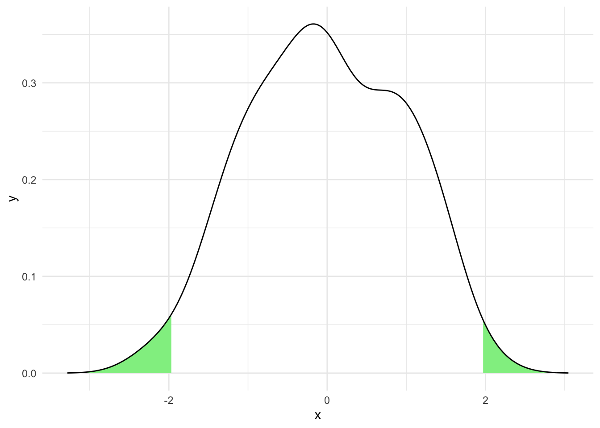
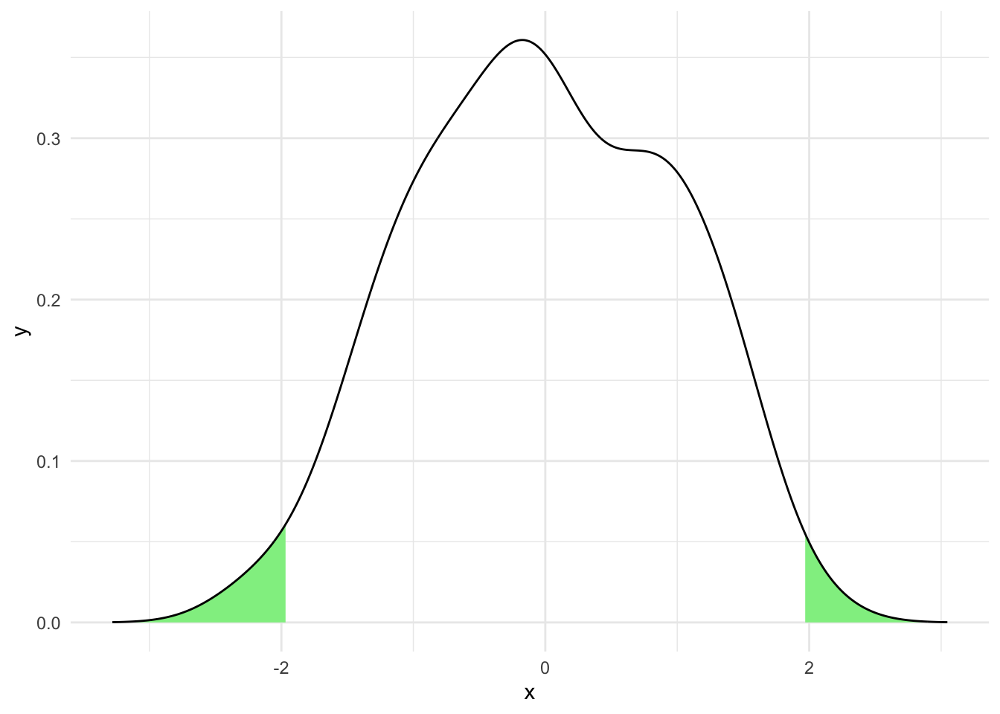
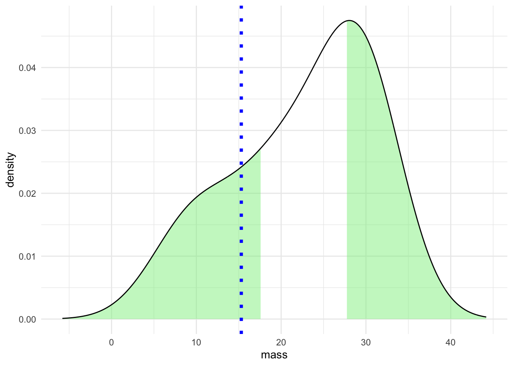
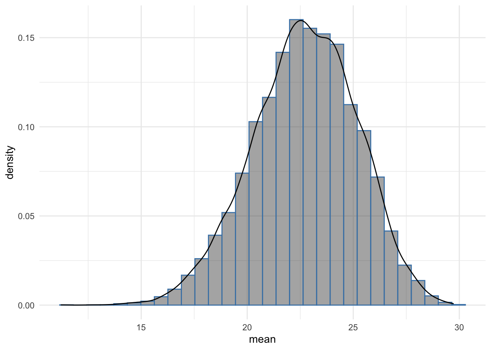

Topic 5 Confidence Intervals
5.1 Confidence Intervals
A confidence interval (CI) is a range estimate of a statistical parameter (a number or measure of some sort) that is computed from the data. It gives a range that the parameter falls in with as certain confidence (the confidence value), so a 95% Confidence Interval of the sample mean tells us the range in which we believe the sample mean will lie.
We often see them rendered like this
 

But wait! Isn’t the first one error bars? Isn’t the second one percentiles of a distribution? That’s right, in fact the visual glyph used for confidence intervals and error bars or confidence intervals and percentiles are the same. This is because they are each a kind of numeric range and we can show them on figures in the same way. We must be careful not confuse them because they seldom show the same thing. To be explicit again confidence intervals show the likely range that a parameter (like a mean) falls in.
Error bars usually show a sample mean plus or minus a fixed number like the standard deviation, but this doesn’t necessarily say anything about the confidence we have that the mean falls in that range.
Similarly, percentiles show how much of the observed data fall in a range, e.g the 10th percentile shows where 10% of the data fall, but it again doesn’t necessarily say anything about the confidence we have about where a particular parameter falls.
5.2 Confidence intervals on Normally distributed data
A common use of confidence intervals is in conjunction with the Normal Distribution as a Null Model. In which we mean we assume that the variability of a measurement, e.g mouse mass is Normally distributed. As the Normal distribution is well understood we can use its characteristics to get a CI for the mean of a sample.
Let’s invent some mouse weights and put them in a vector x.
## [1] 19.57635 29.59349 23.89572 17.75500 11.47902 29.90031 26.04292 30.18206
## [9] 30.28894 8.09662We can use the qnorm() function to get the limits of a given CI on a standardised Normal Distribution. We provide the CI size (here we’ll use 95%) but because a 95% confidence interval has a total of 5% that must fall outside of each end of the interval, we use half of 5% (2.5%) in the function (and we provide it as a probability to this function so it’s 0.975).
We can then plug this into a standard formula to get the half width of the CI using the mean and standard deviation of the sample.
Finally, we can add and subtract this value from the sample mean to get the lower and upper bounds of the CI we want.
This isn’t quite as complicated as it reads, here’s the code
x_bar <- mean(mouse_wts)
s <- sd(mouse_wts)
n <- length(mouse_wts)
half_width <- qnorm(0.975) * s / sqrt(n)
left_bound <- x_bar - half_width
right_bound <- x_bar + half_width
left_bound## [1] 17.625## [1] 27.73708So we calculated that the 95% CI of the mean of mouse weights runs from 17.6250015 to 27.7370849.
The derivation of this formula is generally available in every statistics text book, so I won’t repeat it here, I’ll leave it to the interested reader to follow up if they wish.
5.3 Using a CI
Now that we have a CI constructed we can use it. One fact about CIs calculated on a sample is that the true mean of the population (E.G the weights of all mice in the world, not just the ones we sampled) falls within an \(x\)% CI \(x\)% of the time. We can use this fact to estimate whether another measurement like the mean of another sample falls within a CI. If it doesn’t then we can say the mean of the second sample only occurs in samples from the population (100 - \(x\)%) of the time. So if another sample mean falls outside of our 95% CI we can say that two samples with means this far apart only occur by chance less than 5% of the time.
This is actually analogous to how a hypothesis test works, particularly \(t\)-tests. So the interpretation of a difference in populations is analogous.
Here’s a graphical representation of that on our mouse data

The dotted blue line represents a measurement of a single mouse, the green areas in the density plot are the area’s outside the 95% CI we computed. So the specific measurement looks like it wouldn’t come from our population very often.
5.3.1 Confidence Intervals in practice
Of course, looking at the density curve we see that it is not very convincing as the curve of a Normal distribution and the areas outside the CI seem wider than we might have expected from textbook renderings of a Normal distribution. The numbers for mouse weights were drawn randomly from a Normal distribution and the off pattern is due to the small sample size, we only used 10 mouse weight measurement. As a result the estimation of the curve is quite lumpy. Such a phenomenon not only highlights the need for sensibly sized samples but also indicates the importance of careful examination of the data on which we are creating confidence intervals. To repeat our familiar refrain you can’t use a single measure on it’s own. Other measures should be integrated and confidence intervals are best interpreted along side full representations of the data. Here is the same plot with a histogram that shows more finely the actual data
We can see from the histogram that the data are pretty gappy. Most bins have just one measurement in them (see the right hand scale), so the sparse sampling makes our curve density plot of the data less Normal looking. Putting the histogram data on with the confidence interval gives a much clearer view of the data and improves the interpretability of the data.
5.4 Bootstrap Estimation of Confidence Intervals
What can we do about estimating a confidence interval of a parameter like a sample mean when we don’t know or can’t reasonably assume that the data are drawn from a Normal distribution? We can’t apply the formula we saw above as that is tied to assumptions of Normality, but we can use brute force computer power to create a bootstrap confidence intervals.
Bootstrapping is a resampling technique that builds a bigger data set out of a smaller one and hopes to work out what the spread of data would be. Crucially, it doesn’t rely on assumptions and can be used on any sort of data.
The logic of bootstrapping goes as follows:
- We have a set of numbers in a sample that came from a population, so we know these appear in the population
- If we take lots of samples from our sample, and each time recalculate the parameter we are trying to estimate we can get a distribution of parameter estimates.
- The distribution of parameter estimates tells us how likely a given parameter estimate is based on the data
In summary it means we can create a confidence interval for our parameter from the data we have.
Let’s work through this step-by-step to make it clearer. Starting with the mouse_wts data, lets make a random sample of the values of mouse_wts of equal length to mouse_wts (IE 10) and get the mean of that
Note that we sample ‘with replacement’ (we effectively put each number back to be selected again if needed) if we didn’t we’d end up with just the same set of numbers as in the original mouse_wts which is what we don’t want - we want a sample of the original numbers. So conceivably we could get the same number from mouse_wts all the time. This is actually a desirable feature. Compare mouse_wts and sample_1
## [1] 19.57635 29.59349 23.89572 17.75500 11.47902 29.90031 26.04292 30.18206
## [9] 30.28894 8.09662## [1] 19.57635 29.59349 26.04292 30.18206 30.28894 11.47902 26.04292 29.90031
## [9] 11.47902 23.89572Some of the same numbers do indeed repeat and some numbers do not appear. The mean of the sample_1 was 23.848075, this is different to the mean of mouse_wts which was 22.6810432
We get a different set of numbers and a different mean each time we iterate this process. If we iterate this many times (like thousands, usually) we get a distribution of the parameter of interest, the mean.
The bootstrap function in the resample package takes care of this for us. We give it the data we want to sample from, the name of the statistic we want to compute (here mean) and the number of replicates to do.
We can get the values of the CI with the CI.percentile() function, passing in the lower and upper bound for the CI with the probs argument.
## 2.5% 97.5%
## mean 16.6212 27.9609So, this is our 95% CI for the mean of mouse_wts. How does it compare with our earlier computed values? It’s actually really close.
## [1] 17.625## [1] 27.737085.5 Plotting the bootstrap distribution
We would often want to view the bootstrap distribution to understand the CI of our mean.
The function returns a complex object and the actual computed values are in the replicates slot which we can get with the $ syntax and convert to a data frame and use in a typical plot.
results <- as.data.frame(bstrap_estimates$replicates)
ggplot(results) +
aes(mean, y=..density..) +
geom_histogram(colour="steelblue", alpha=0.5) +
geom_density() + theme_minimal()
The histogram shows that most of the bootstrap resample means were around 22, further the distribution is smooth and approaches the Normal distribution, reflecting the underlying data from which the original mouse_wts values were drawn. The sample size of 1000 bootstrap replicates contributes to this and it is clear that the bootstrap CI is reliable as to the position of the mean of the data from which mouse_wts was sampled.
Bootstrap sampling can be a great way to get a confidence interval, it is particularly useful when we have smallish sample sizes and/or don’t know the background distribution.